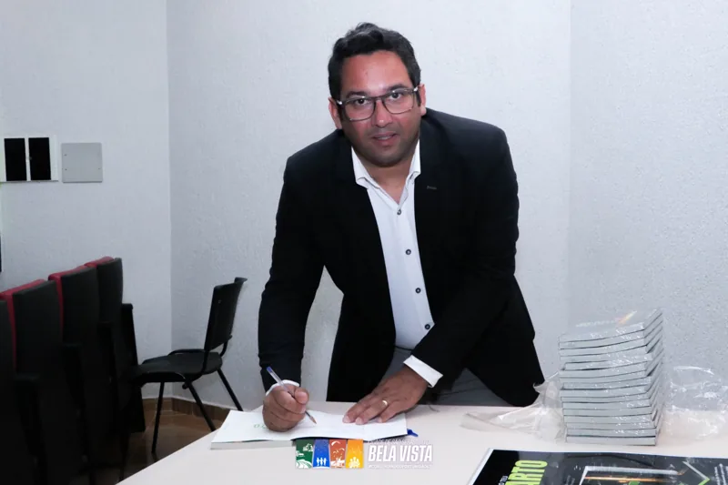
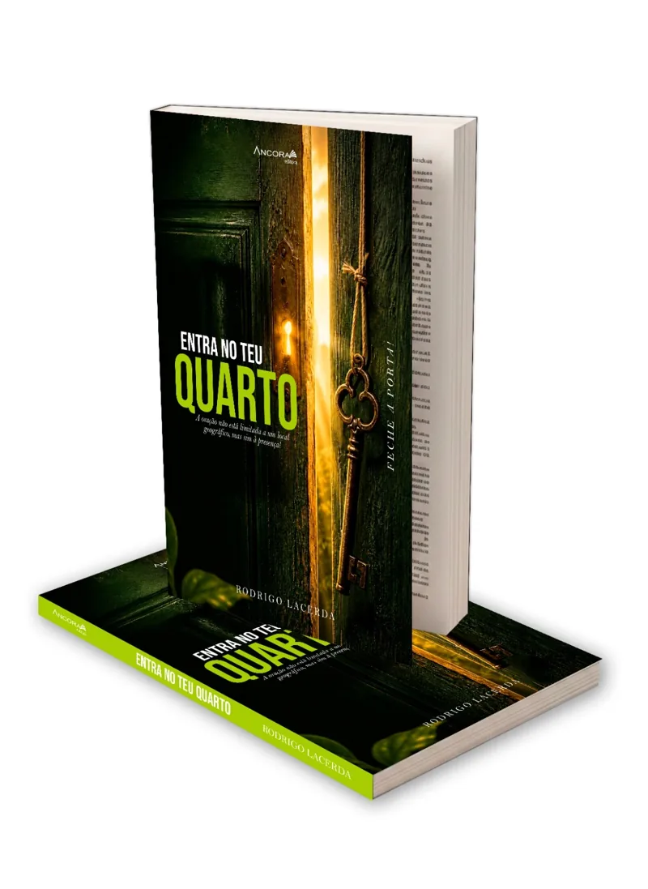
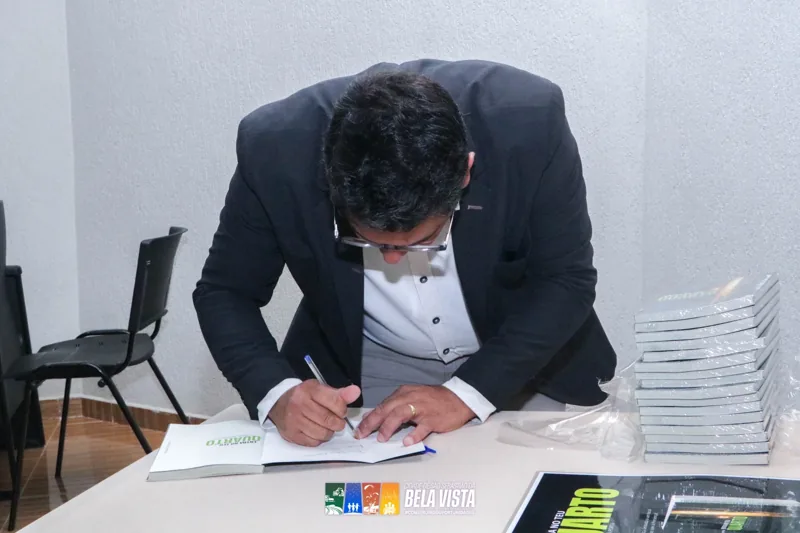
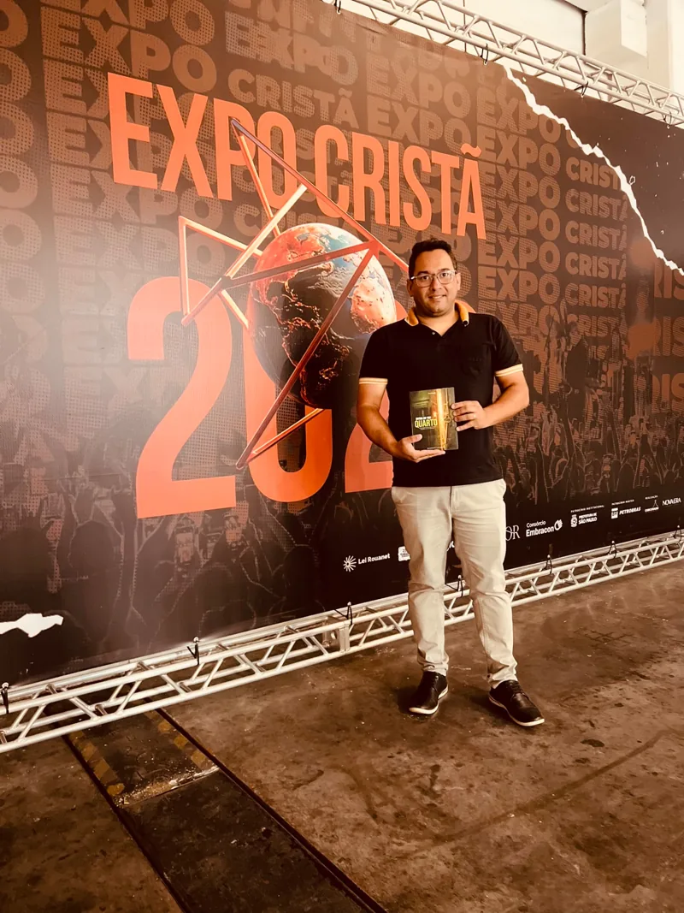

Palestras e encontros
Leve Rodrigo ao seu evento. Consulte temas, formatos e disponibilidade para o seu público.
Conversar sobre palestrasFÉ. CONHECIMENTO. PROPÓSITO.
A força de uma mensagem está no encontro que ela provoca. Conheça a trajetória, os livros e as palestras de Rodrigo Lacerda.
PALAVRAS QUE CONECTAM
Explore a escrita de Rodrigo e converse sobre o seu próximo evento.
Leve Rodrigo ao seu evento. Consulte temas, formatos e disponibilidade para o seu público.
Conversar sobre palestrasUma leitura sobre o Pai Nosso, a vida de oração e a intimidade com Deus.
Conhecer o livroDas páginas às conversas: autógrafos e participações em eventos literários e culturais.
Ver a trajetória
SOBRE RODRIGO
Nascido em Pouso Alegre e residente em São Sebastião da Bela Vista, Minas Gerais, Rodrigo Lacerda de Almeida reúne em sua trajetória a fé, a família, a gestão e a literatura.
Bacharel em Teologia pela FAETEL-SP e autor de Entra no Teu Quarto e Feche a Porta, compartilha reflexões sobre a oração do Pai Nosso e a intimidade com Deus.
Escritor e teólogoUma trajetória de fé e conhecimento
Editora ÂncoraLiteratura cristã
Encontros que aproximamLivros, autógrafos e cultura
UMA MENSAGEM PARA LEVAR COM VOCÊ

RODRIGO LACERDA · EDITORA ÂNCORA
Um mergulho na oração do Pai Nosso.
A oração como relacionamento. O silêncio como espaço de escuta. A intimidade com Deus como caminho para uma vida de fé.
A partir do Pai Nosso e de Mateus 6:6, Rodrigo propõe uma reflexão sobre o lugar secreto, a paternidade de Deus e a vida de oração no cotidiano.
DAS PÁGINAS PARA A VIDA
Registros de uma caminhada feita de leitores, fé e encontros.


SEU PRÓXIMO ENCONTRO COMEÇA AQUI
Consulte temas, formatos e disponibilidade diretamente com Rodrigo.